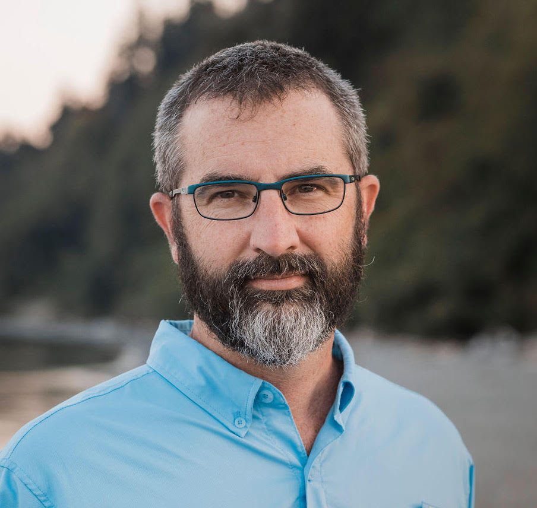
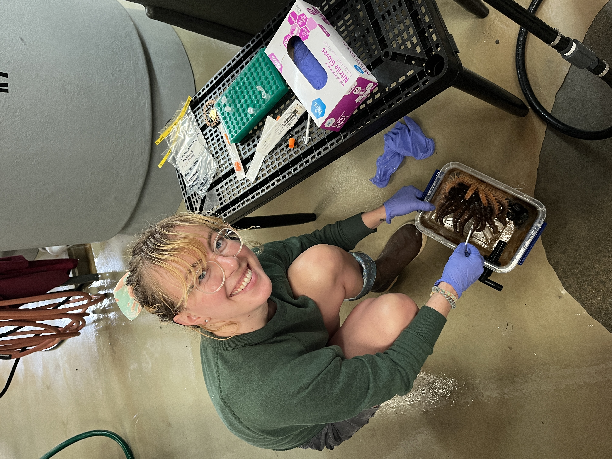

Principal Investigator
Steven Roberts

Professor in the School of Aquatic and Fishery Sciences at the University of Washington where his research focuses on characterizing physiological response of aquatic species to environmental change with a particular focus on the relationship of transcriptomics, genetics, and epigenetic modifications. Current research efforts include characterizing genome to phenome processes in diverse aquatic species.
Graduate Students
Zach Bengtsson
- Lab notebook
- Email: zbengt@uw.edu

I grew up in the beautiful, landlocked city of Colorado Springs, CO, but I have always been fascinated by the ocean and marine life. In my undergraduate studies at Boston University, I developed a passion for marine invertebrates and studied coral epibionts living on mangrove prop roots in Belize. After graduating in 2015, I developed my skills in science and research through positions in medical molecular biology, seasonal environmental DNA work at The Nature Conservancy, and various environmental remote sensing roles in the NASA Earth Applied Sciences Program. I joined the Roberts Lab in Fall 2021, where I work on the E5 Coral Project. My research focuses on assessing the response of corals to changing environmental conditions in Moorea using epigenetic techniques. I am also interested in incorporating remotely-sensed datasets as model inputs to better understand the relationship between environmental stressors and organismal response. Please feel free to get in touch with me via email or through my LinkedIn!
Chris Mantegna
- Lab notebook
- Email: mantegna@uw.edu

Chasing my love of Orcas, coffee, and grunge to the Pacific Northwest has yielded this Baltimore, MD transplant an opportunity to become a double University of Washington alumna. I graduated with my B.S. in Marine Biology in 2021 and am continuing my academic pursuits as a SAFS and NSF Graduate Fellow. I am currently using -omics techniques to evaluate the relationship between environmental influences, ecotoxins, and organism physiology in the Pacific Northwest using bivalves as the target organisms. Moving through my graduate work I’d like to expand into warmer waters and study those relationships with Syngnathids as the target organisms. When not working in the lab I happily pepper my daughter with dad jokes, build community as a member of BWEEMS and BIMS, and spend my free time moonlighting as a wannabe Chihuly in beginners glass blowing classes.
Celeste Valdivia
- Lab notebook
- Email: cvaldi@uw.edu

Although growing up in San Diego, CA meant that I spent many days of my youth out in the ocean, my scientific interest in the aquatic environment and it’s species wasn’t fully realized until I began a position in 2018 as an undergraduate research assistant in an aquatic ecotoxicology lab the University of California, Davis. During that time, I completed my undergraduate capstone project analyzing the effects of bifenthrin exposure on the behavior of the federally endangered Delta Smelt. After graduating with a bachelor of science in Animal Biology in 2020, I continued my research work in that same lab for an additional two years and further explored the developmental, behavioral, and reproductive impacts several commonly employed urban and agricultural pyrethroids had on native Californian estuarine fish species. In 2022, I dually joined the Gardell Lab at the University of Washington, Tacoma and the Roberts Lab housed in the School of Aquatic and Fishery Sciences (SAFS) at the University of Washington, Seattle. As a graduate student at SAFS, I am now focused on identifying the constraints on in vitro cellular immortality in the marine model invertebrate, Botryllus schlosseri. This exploratory process will primarily involve the implementation of procedures for systematic primary cell culture optimization, stress-induced mutagenesis, and bioinformatic network analysis. In my free time I enjoy cooking, tending to my mini indoor garden, and playing guitar. Feel free to get in touch with me through email if you have any questions!
Grace Crandall
- Lab Notebook
- Email: graceac9@uw.edu

I’m a returning student to the Roberts Lab, having previously received my BSc (2016) and MSc (2020) in this lab. I’m coming back to use -omics techniques to understand host response to pathogens. More specifically, I’ll be continuing work that I’ve been part of since summer 2021 using transcripotmics to investigate the immune response of Pycnopodia helianthoides to sea star wasting disease. I will also be doing some research on eelgrass microbiomes in relation to eelgrass wasting disease and pathogens that cause illness in humans and animals. I’ve been working for Drew Harvell on the sea star project for the past three years and I am very excited to get to continue the work in a PhD program and to be back in the Roberts Lab!!! In my free time I like to go on walks, listen to music, go to concerts/out dancing, foster dogs, and am slowly teaching myself how to play guitar! If you’re curious and want to know more about sea stars, eelgrass, wasting diseases, or anything else, feel free to reach out through email!
Kathleen Durkin
- Lab Notebook
- Email: kdurkin1@uw.edu

I’m pursuing a PhD in Aquatic and Fishery Sciences, and am broadly interested in environmental response in marine invertebrates!
I spent my undergraduate career studying soft coral taxonomy and population genetics using single- and multi-locus sequencing, and graduated from Harvey Mudd College in 2023 with a B.S. in Mathematical and Computational Biology.
Since joining the Roberts Lab later that year, I’ve shifted my focus to epigenetics – molecular modifications that influence gene expression without affecting the DNA sequence. My current projects include the study of non-coding RNAs in corals and of multigenerational DNA methylation in Eastern oysters. You can learn more about my work through my publicly-available digital lab notebook, linked above. Outside of the lab I TA R-based biostatics classes, am learning Swedish, and like to spend my free time thrifting, crafting, and finding new shows to watch with my partner!
Megan Ewing
Email: mewing0@uw.edu

I have been proud to call Washington home for most of my life, so I am thrilled to be able to conduct graduate research in the PNW as a part of the Roberts Lab. I graduated from UW’s Marine Biology B.S. program in 2021, and went on to explore the aquatic sciences world outside of academia and research for a bit. Most of that time was spent working in education and non-profit spheres with Friends of the Issaquah Salmon Hatchery (FISH) where I was able to expereince how the latest science and research is communicated to the public and advocated for with local, state, and federal legistlators. In the background of this, I was also working on a manuscript for a project on invasive lionfish ecology that I started towards the end of my undergraduate career, so research was still heavily on my mind and I knew it was time to get back to it. I have been deeply fascinated in reproductive physiology and stress responses ever since I was first introduced to the topics, so the Roberts Lab seemed like the place to be. I am looking forward to my time with this group and getting to explore questions relating to stress and reproduction in the context of the ever changing climate of today’s world. Outside of school and research, I spend most of my time on a board (snow/surf/skate), in dance halls, or climbing.
Postdoctoral Research Associates
Laura H Spencer, PhD

I am a postdoctoral researcher and NOAA Alaska Fishery Science Center Affiliate. Currently I study the response of Pacific cod and king crab species to temperature and acidification. Alaskan cod and crab populations crashed in recent years, coinciding with marine heatwaves and resulting in fisheries closures. I work with NOAA researchers conducting experiments on hatchery settings (Newport, OR and Kodiak, AK) to pair genomics data (RNASeq, lcWGS) with lab-based measurements for a deeper understanding of physiological responses and potential for adaptation. I also look for opportunities to devlop genomics tools that generate data that is fundamental to fisheries management, aquaculture, and marine conservation.
Research Scientists
Sam White

I am a research scientist in the lab since the lab’s inception in 2007 and am jack-of-all-trades lab member. I dabble in all aspects of helping the lab run efficiently (bionformatics, computer/server maintenance, training new personnel, purchasing/reconciliation, safety documentation/training, etc), but as a molecular biologist by training (B.S. Univ. of Illinois @ Urbana-Champaign - Plant Biology; M.S. Arizona State Univerity - Plant Biology), I excel at bench work.
Outside of lab-related work, I dig playing video games and listening to Phish (and, to placate the haters, I also like other good bands/musicians like Queens of the Stone Age, Uriah Heep, and Kacey Musgraves). I guess I also enjoy spending time with my spouse, kid, and dog, too.
Ariana S. Huffmyer, PhD
- Lab notebook
- LinkTree
- Email: ashuff@uw.edu

I am a Research Scientist at the University of Washington studying the effects of climate change on marine invertebrate early life history, with a particular interest in tolerance and resilience to stress in reef-building corals and bivalves.
My current research interests are in understanding how climate change affects coral performance and survival using multi-omic approaches. Increased frequency and severity of marine heat waves are causing coral bleaching - the breakdown of the nutritional symbiosis between tropical corals and their algal endosymbionts. My research investigates the formation of symbiosis between corals and their algal symbionts during early development in coral species in Hawaii, USA, and Moorea, French Polynesia by utilizing physiological, metabolomic, and transcriptomic approaches.
Our work also investigates the capacity for aquaculture species (e.g., the Pacific oysters) to increase thermal tolerance and growth through stress hardening. We work in collaboration with aquaculture growers and hatcheries throughout Western Washington.
I use online notebooks and GitHub to publicly share my data and analyses.
Outside the lab, I enjoy hiking, mountain biking, fly fishing, and exploring with my two dogs the Pacific Northwest.
Lauren Vanderpaas
Undergraduate Students
Madeline Baird
Genevieve Buchanan
Noah Ozguner
Noah Krebs
Henry Berg
Alumni
Postdoctoral Research Associates
Larken Root
Hollie Putnam
Research Scientists
Brent Vadopalas
Giles Goetz
Delaney Lawson
Kaitlyn Mitchell
Crystal Simchick
Graduate Students
Olivia Cattau
Rhonda Elliot
Jake Heare
Andy Jasonowicz
Claire Olson
Mackenzie Gavery
Doug Immerman
Caroline Storer
Dave Metzger
Undergraduates
Eric Essington Dorothy Lartey Delaney Lawson (2022) proposal paper presentation
Hana Ra (2020)
Ronit (pre-college) (2019)
Alanna Greene (2019)
Grace Crandall (2016) proposal paper slides presentation notebook
Jonathan Allen UW (2016) proposal paper slides presentation notebook
Mrunmayee Manohar Shete (2015) notebook
Katie Jackson UW SAFS (2015)
Joelle Blaise UW SAFS (2014)
Hannah Wear; UW SAFS (2013-2014) proposal paper poster notebook
Charles Duber; UW SAFS (2013-2014) proposal paper slides notebook
Jessica Blanchette; UW SAFS (2013-2014) proposal paper slides notebook
Bradley Chi; UW SAFS proposal paper slides
Paul Ehlen; UW FISH499 blog slides
Harry Podschwit; UW notebook
Derek Brady; UW SAFS proposal paper slides
Manel Khan; UW notebook
David Berman; UW SAFS proposal paper
Herschel Cox; UW SAFS proposal paper
Lexie Miller; UW FISH499 paper
Jason Tayag; UW SAFS proposal paper slides
Sonia Albin; UW SAFS proposal paper slides
Zac Halls; UW notebook
Amanda Davis FISH499; UW paper
Christina Miller FISH498; UW notebook
Rony Thi; UW notebook
Anna Fabrizio; UW SAFS proposal | paper | presentation
Kevin Jeong; UW FISH499 notebook
Rachel Thompson; UW SAFS proposal | paper | slides
Leslie Jensen; UW SAFS proposal | paper | slides | video
Christin McLemore; UW SAFS proposal | paper | slides | video
Tatyana Marushchak; UW Chemistry project
Stephannie Spurr; UW SAFS paper | 499
Katie Fulkerson; UW SAFS proposal | paper | presentation
Cullen Taplin; UW SAFS proposal | paper | presentation
Juliann Clark; UW project
Tushara Saint Vitus; UW SAFS project
Lindsay Braun; Santa Clara University project
{kind=link}
Mairead Bermingham; N Univ of Ireland, Cork project
Zachary Schiller; Tufts University project
Visiting Scientists
Shanelle Haughton; PhD student in the Marine-Estuarine-Environmental Science program at the University of Maryland Eastern Shore - 2021
Javier A. Rodriguez-Casariego; Florida International University
August 2019
Roberto Carlos Arredondo Espinoza; Mexico Spring 2019
Marcos Espinel; Universidad Científica del Sur, Peru April 2017
Dr. Cristian Gallardo; University of Concepcion Autumn 2016
Dr. Hollie Putnam; Research Associate Autumn 2016
Jose Angel Hidalgo de la Toba; CIBNOR PhD student
April 2016 New method for determining size at age in individuals to inform geoduck population models.
Timothy Green; University of Queensland
Adelaide Rhodes; Visiting Scholar